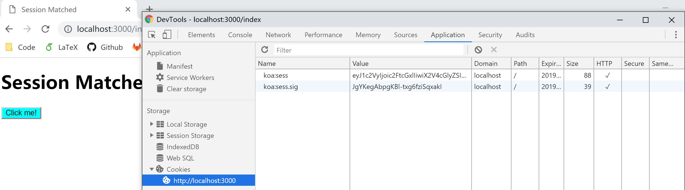

5.2 session
Koa 只提供了 cookies 的操作，对于 session，并没有包装。这里我们使用第三方库：koa-session。它可以帮我们在 koa 中添加 ctx.session 操作，用起来就像是 koa 集成了 session 操作。
为什么会选择这个库呢？我们先来看看这个库里对于 session 存储的说明：https://www.npmjs.com/package/koa-session#external-session-stores 。它提倡尽量将 session 存储在 cookies 中，如果需要外部存储，可以传递一个 store:{ get(key, maxAge, { rolling }), set(key, sess, maxAge, { rolling, changed }), destroy(key)}。我个人认为的这个库的优点之一：不限制外部存储数据库。
对于将 session 存储在 cookies 里这个观点，和近年来 session 存储的开销日益增大是有一定关系的。没有接触过企业项目的我，也不好过多评价。对于我们自己写的小项目，不涉及敏感信息的话，存储在 cookies 里是很方便的~
koa-session
好了，下面我们来实践一下，利用 session 来控制一下可访问的页面。
我们首先在最前面使用 koa-session 库，然后对请求进行拦截。拦截的思想是：/ 和 /get-session 是不需要验证 session 的(未登录用户可以访问的页面)，而 /index 是具有 session (登陆用户)才可以访问的。
const koa = require('koa');
const router = require('koa-router')();
const static = require('koa-static');
const session = require('koa-session');
const nunjucks = require('nunjucks');
const path = require('path');
const app = new koa();
// Add session middleware
app.keys = ['com.w-sfs' + Math.random().toString()]; /** Different key every time server start */
const SESSION_CONFIG = {
key: 'koa:sess', /** (string) cookie key (default is koa:sess) */
/** (number || 'session') maxAge in ms (default is 1 days) */
/** 'session' will result in a cookie that expires when session/browser is closed */
/** Warning: If a session cookie is stolen, this cookie will never expire */
maxAge: 86400000,
autoCommit: true, /** (boolean) automatically commit headers (default true) */
overwrite: true, /** (boolean) can overwrite or not (default true) */
httpOnly: true, /** (boolean) httpOnly or not (default true) */
signed: true, /** (boolean) signed or not (default true) */
rolling: false, /** (boolean) Force a session identifier cookie to be set on every response. The expiration is reset to the original maxAge, resetting the expiration countdown. (default is false) */
renew: false, /** (boolean) renew session when session is nearly expired, so we can always keep user logged in. (default is false)*/
};
app.use(session(SESSION_CONFIG, app));
app.use(async (ctx, next) => {
let url = ctx.request.url;
if (url === '/get-session' || url === '/') { // non-session request
ctx.session.user = null;
await next();
} else if (url.includes('js') || url.includes('css') || url.includes('image')) { // static files
await next();
} else { // session needed
if (ctx.session.user && ctx.session.user === 'sample') { // session match
await next();
} else { // session mismatch
ctx.redirect('/');
}
}
});
let env = nunjucks.configure('views'); // path to model file folder
router.get('/', (ctx, next) => {
ctx.response.body = 'Go to /get-session first';
});
router.get('/get-session', (ctx, next) => {
ctx.session.user = 'sample';
ctx.redirect('/index');
});
router.get('/index', (ctx, next) => {
ctx.response.body = env.render('index.html', {
title: 'Session Matched'
});
});
app.use(router.routes());
app.use(static(path.join( __dirname, './static')));
app.listen(3000, () => {
console.log('Koa running at port 3000...');
});
试一下直接访问 http://localhost:3000/index ，服务器会直接重定向到 http://localhost:3000 ，因为我们还没有 session (登陆)。接着，访问 http://localhost:3000/get-session ，然后我们就可以正常访问 http://localhost:3000/index 了。浏览器里也留下了我们的 session 凭据：
